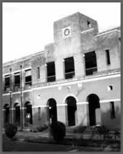

1950 - 1980
1950
Dayalbagh Engineering College, Dayalbagh, Agra established as the first private Engineering College in India post-Independence, affiliated to Agra University, Agra, offering:
B.Sc. (Engineering) degree in Electrical and Mechanical Engineering disciplines.
1952

College buildings comprising of Main Building and Workshop complex constructed to house-
- Carpentry, Smithy, Molding and Machine shops
- Heat Engines and Hydraulic Machines Laboratories
- Electronics & Telecommunications Laboratories
- Applied Sciences Laboratories
1961
Laboratory building constructed to house Electrical Machines Laboratory and Material Testing Laboratory
1973
Engineering College became DEI Engineering College, one of three constituent colleges of the Dayalbagh Educational Institute (DEI) founded by Most Revered Dr. M. B. Lal Sahab as its Founder Director
1980
1981
- Dayalbagh Educational Institute (Deemed University) was established and the erstwhile DEI Engineering College became the DEI Faculty of Engineering
- Computer Center established
B.Sc. (Engineering) degree in Electrical and Mechanical Engineering disciplines.
1984
Research Programme leading to Ph. D. degrees in Electrical and Mechanical Engineering disciplines introduced
1985
Additional laboratories setup in the laboratory building to house-
- Microprocessors & Power Electronics Laboratories
- Metrology Laboratory
- Heat Transfer Laboratory
1987
CNC Laboratory setup with a Flexible Manufacturing Cell equipped with CNC Lathe, CNC Milling Machine and a Mitsubishi Trainer Robot
1990
1990
- Part-time M. Tech. Programme in Engineering Systems introduced
1991
- Biomedical Engineering Lab equipped with sate-of-the-art Bio-medical equipment established
- Organized National Seminar on Industrial Engineering & Management (NSIEM-91)
1992
- Full-time M. Tech. Programme in Engineering Systems introduced
1994-1996
- Educational Technology Lab was setup with state-of-the-art Multimedia Facilities
- Hosted National Systems Conference (NSC-94)
- Organized National Seminar on Neural Networks and Fuzzy Logic Application in Manufacturing (NENFAM-96)
2000 - 2012
2000
- New Faculty Library building was constructed
- Organized National Seminar on Applied Systems Engineering and Soft Computing, SASESC-2000
2002
- Organized National Seminar on Emerging Convergent Technologies and Systems (SECTAS-2002)
2003
- Organized a Symposium on Ethics and Moral Values (SEWA-03) for students
2005
- Soft Computing (with Linux Cluster) and Image Processing Laboratories established
2006
- Advanced Computing Laboratory with state-of-the-art computers established
2007
Launching of New Programmes
- B.Sc.Engg. Electrical with specialization in Electronics & Communications)
- B.Sc.Engg. (Electrical with specialization in Computer Science)
- B.Sc.Engg. (Mechanical with specialization in Industrial Engineering)
- B.Sc.Engg. (Mechanical with specialization in Computer Science)
- Five Year Integrated B.Sc. Engg. & M.Tech.
- Five-Year Integrated B.Sc. Engg. & M.B.A. in collaboration with the Faculty of Social Sciences
- Seven-Year Integrated B.Sc. Engg., M.Tech. & Ph.D.
2008
- Lateral Entry to B.Sc. (Engg.) for girls from Diploma in Electronics Engineering stream, DEI Technical College.
- Setting up of State-of-the-art e-classrooms in the faculty to offer quality technical education in the distance mode.
2010
Establishment of a number of new labs including Computer Science Labs-
- Computer Networks Lab
- Image Processing Lab and Advanced Programming Lab
- Industrial Engineering Lab
- Industrial Kinesiology Lab
- Work Science Lab and SQC Lab.
2011
- Installation of 150 KWP Solar Electric Power Plant in the Faculty